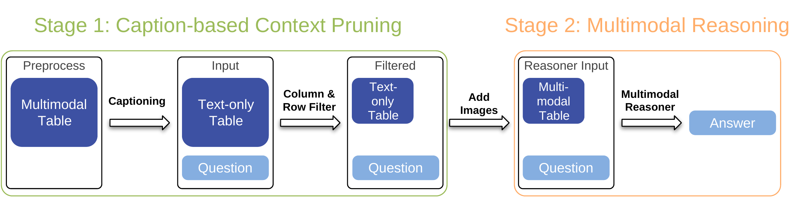
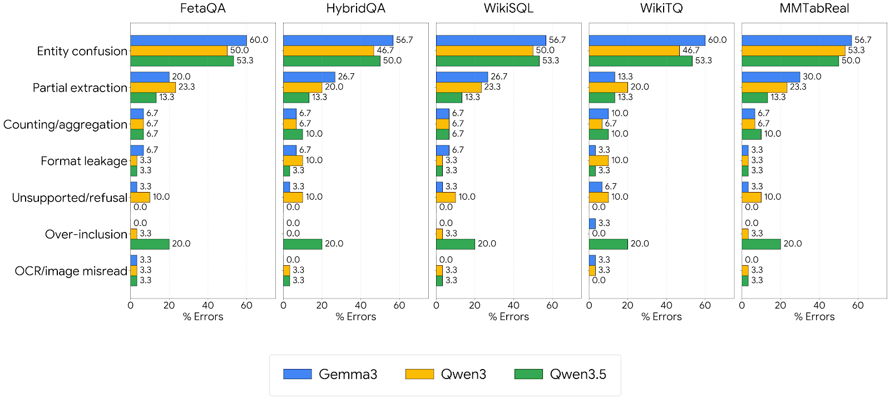

CAPTR: Caption-based Context Pruning for Tabular Reasoning
EMNLP 2026 MainConference
Abstract
Multimodal Large Language Models struggle with tabular reasoning on tables containing images as cells owing to their limited memory and the distractions posed by the surrounding irrelevant visual elements. Existing context-reduction methods reduce context size but degrade reasoning accuracy: text-only pruning neglects visual cells, token-level pruning discards valuable information, and retrieval cannot understand table structure. We propose CAPTR: Caption-based Context Pruning for Tabular Reasoning, a two-stage framework that uses image captions as a lightweight textual proxy to prune non-pertinent rows and columns and then restores images for reasoning. CAPTR can reduce the context length by 80% while achieving up to 8% accuracy improvement against competitive baselines. By analyzing the error cases, we find that entity confusion contributes to the majority of the remaining errors (about 50-60%). CAPTR is the first multimodal context-reduction method to improve performance on multimodal tabular reasoning.
Framework
CAPTR is a two-stage approach. Stage 1: Caption-based Context Pruning replaces images with query-independent captions, converting the multimodal table into a text-only table. Column and row pruning then uses symbolic (SQL) and semantic reasoning to select only the relevant parts. Three captioning strategies are evaluated: naive, detailed, and short captions. Stage 2: Multimodal Reasoning converts the pruned text table back to multimodal format by replacing captions with their original images. The compact table is passed through the MLLM, benefiting from reduced context length and reduced distraction from irrelevant images.

CAPTR pipeline: Stage 1 converts images to captions and prunes irrelevant rows/columns. Stage 2 restores images in the pruned table for final multimodal reasoning.
Results
CAPTR consistently outperforms all baselines across three open-source MLLMs (Gemma-3-27B, Qwen3-VL-32B, Qwen-3.5-27B), four question types (EQ, AQ, IQ, VQ), and five benchmarks. Select a model tab to view its performance.
Main Results
| Baseline | MMTabQA-WikiTQ | MMTabQA-WikiSQL | MMTabQA-HybridQA | MMTabReal | ||||||||||||
|---|---|---|---|---|---|---|---|---|---|---|---|---|---|---|---|---|
| EQ | AQ | IQ | VQ | EQ | AQ | IQ | VQ | EQ | AQ | IQ | VQ | EQ | AQ | IQ | VQ | |
| ColQwen2 Retrieval | ||||||||||||||||
| Row-wise | 43.12 | 40.75 | 27.79 | 35.35 | 53.39 | 56.38 | 58.10 | 50.85 | 52.35 | 49.53 | 53.69 | 44.45 | 37.36 | 42.15 | 26.46 | 26.62 |
| Image+Text | 47.00 | 40.71 | 36.09 | 40.94 | 54.81 | 53.61 | 58.41 | 50.08 | 54.90 | 50.84 | 57.20 | 46.69 | 39.74 | 46.83 | 26.59 | 31.47 |
| Gemma3-27B | ||||||||||||||||
| Partial Input | 40.63 | 31.04 | 64.14 | 33.29 | 39.57 | 28.14 | 70.48 | 27.71 | 68.43 | 62.43 | 69.14 | 49.14 | 28.51 | 37.19 | 23.61 | 22.06 |
| SparseVLM | 35.71 | 36.43 | 32.00 | 33.29 | 43.29 | 38.71 | 52.38 | 34.86 | 60.71 | 53.00 | 59.43 | 39.86 | 34.71 | 35.26 | 23.61 | 28.09 |
| Weaver | 22.47 | 27.80 | 46.26 | 21.71 | 37.86 | 48.43 | 65.08 | 19.18 | 58.14 | 29.64 | 62.00 | 62.16 | 28.31 | 31.01 | 17.15 | 19.85 |
| Interleaved | 62.86 | 51.86 | 67.00 | 55.86 | 63.00 | 57.43 | 74.60 | 62.14 | 74.43 | 68.00 | 73.71 | 57.14 | 43.24 | 46.56 | 30.94 | 33.68 |
| CAPTR | 67.29 | 55.00 | 67.86 | 57.14 | 64.29 | 64.43 | 75.56 | 64.29 | 77.71 | 68.57 | 81.00 | 67.29 | 44.77 | 47.66 | 31.60 | 34.71 |
| Δ | +4.43 | +3.14 | +0.86 | +1.28 | +1.29 | +7.00 | +0.96 | +2.15 | +3.28 | +0.57 | +7.29 | +5.13 | +1.53 | +1.10 | +0.66 | +1.03 |
| Baseline | MMTabQA-WikiTQ | MMTabQA-WikiSQL | MMTabQA-HybridQA | MMTabReal | ||||||||||||
|---|---|---|---|---|---|---|---|---|---|---|---|---|---|---|---|---|
| EQ | AQ | IQ | VQ | EQ | AQ | IQ | VQ | EQ | AQ | IQ | VQ | EQ | AQ | IQ | VQ | |
| Qwen3-VL-32B | ||||||||||||||||
| Partial Input | 40.63 | 32.05 | 64.57 | 30.29 | 40.86 | 27.21 | 71.43 | 27.43 | 67.71 | 64.14 | 69.14 | 48.43 | 24.74 | 28.65 | 18.18 | 17.21 |
| SparseVLM | 59.00 | 48.71 | 67.14 | 53.71 | 61.00 | 54.14 | 73.65 | 59.14 | 72.43 | 66.57 | 74.86 | 56.43 | 32.91 | 36.06 | 22.39 | 26.03 |
| Weaver | 28.14 | 34.78 | 45.74 | 21.71 | 43.86 | 48.29 | 60.32 | 34.25 | 44.00 | 31.43 | 56.71 | 32.43 | 28.97 | 29.36 | 22.10 | 21.80 |
| Interleaved | 64.00 | 51.00 | 66.14 | 54.43 | 62.71 | 58.43 | 75.24 | 63.57 | 73.00 | 66.29 | 75.71 | 58.43 | 38.75 | 38.84 | 29.85 | 32.79 |
| CAPTR | 70.14 | 54.71 | 70.14 | 58.00 | 65.71 | 62.00 | 77.06 | 65.86 | 81.86 | 71.86 | 82.14 | 63.29 | 43.38 | 41.87 | 31.21 | 35.15 |
| Δ | +6.14 | +3.71 | +4.00 | +3.57 | +3.00 | +3.57 | +1.82 | +2.29 | +8.86 | +5.57 | +6.43 | +4.86 | +4.63 | +3.03 | +1.36 | +2.36 |
| Baseline | MMTabQA-WikiTQ | MMTabQA-WikiSQL | MMTabQA-HybridQA | MMTabReal | ||||||||||||
|---|---|---|---|---|---|---|---|---|---|---|---|---|---|---|---|---|
| EQ | AQ | IQ | VQ | EQ | AQ | IQ | VQ | EQ | AQ | IQ | VQ | EQ | AQ | IQ | VQ | |
| Qwen-3.5-27B | ||||||||||||||||
| Partial Input | 36.19 | 29.47 | 60.14 | 21.57 | 34.86 | 27.00 | 67.94 | 28.00 | 68.57 | 58.14 | 70.14 | 47.14 | 33.00 | 33.33 | 21.71 | 20.88 |
| SparseVLM | 58.57 | 47.43 | 63.63 | 51.43 | 60.43 | 55.57 | 71.29 | 60.86 | 71.57 | 66.86 | 71.38 | 55.71 | 33.74 | 36.65 | 23.24 | 27.21 |
| Weaver | 27.57 | 21.88 | 48.17 | 18.28 | 28.71 | 16.14 | 60.32 | 24.93 | 48.92 | 36.55 | 64.08 | 44.14 | 31.97 | 35.64 | 23.69 | 22.86 |
| Interleaved | 59.43 | 50.57 | 64.86 | 49.57 | 65.00 | 58.00 | 75.24 | 60.00 | 75.43 | 65.14 | 76.29 | 62.86 | 46.21 | 47.66 | 33.24 | 35.00 |
| CAPTR | 66.71 | 56.29 | 70.29 | 54.71 | 67.14 | 63.13 | 77.06 | 62.86 | 83.00 | 70.43 | 83.86 | 64.43 | 49.13 | 49.63 | 34.85 | 36.03 |
| Δ | +7.28 | +5.72 | +5.43 | +5.14 | +2.14 | +5.13 | +1.82 | +2.86 | +7.57 | +5.29 | +7.57 | +1.57 | +2.92 | +1.97 | +1.61 | +1.03 |
Error Analysis

Error distribution. Entity confusion is the dominant error type across all datasets and models (50-60%), followed by partial extraction (13-30%).